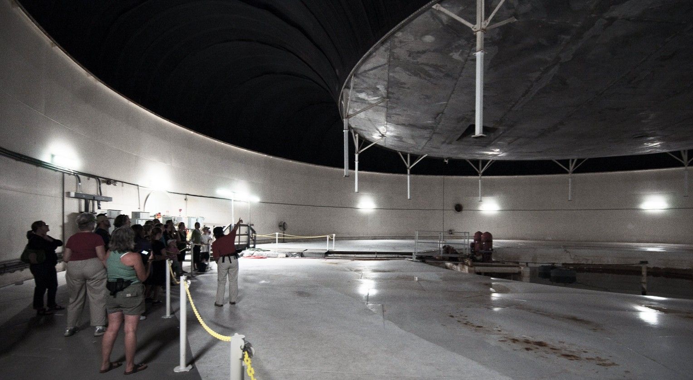
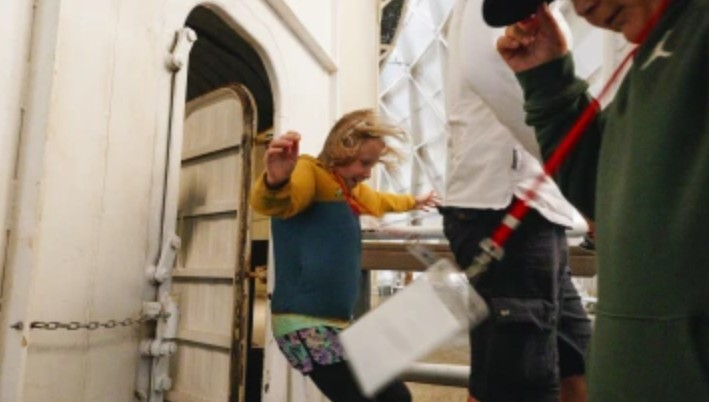
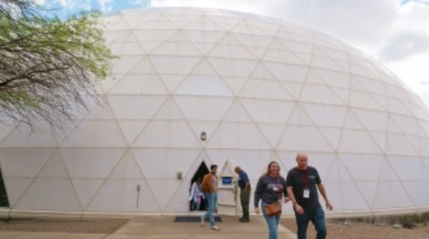
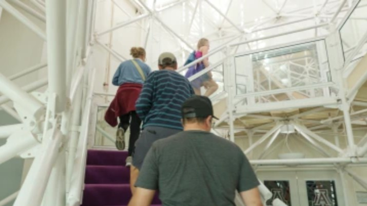
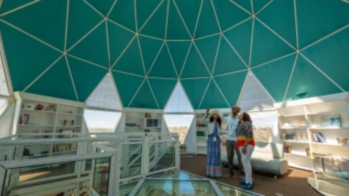
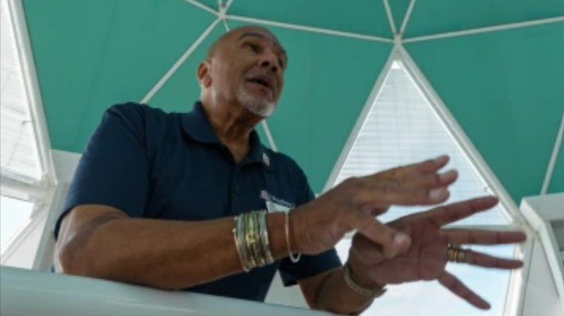

Tours & Tickets
Choose from a self-guided app experience and optional guided add-on tours that take you deeper into the science, history, and engineering of Biosphere 2.

The Biosphere 2 Experience
The Biosphere 2 Experience is an app-guided audio tour that brings the facility to life through never-before-seen photos, exclusive videos, science stories, and interviews with researchers. As you walk through the exterior, human habitat, and wilderness areas, the app immerses you in 30 years of Earth science history.
Through science stories and interviews, you'll learn about our world-class research as you traverse the rainforest, ocean, desert, and savanna biomes—all under one roof.
Guided Add-On Tours
Take your visit further with optional guided tours that explore areas not seen on the self-guided experience. These small-group tours are led by knowledgeable guides and have limited availability—book in advance to secure your spot.



Guided Lung Tour
Go behind the scenes into the technical "lungs" of Biosphere 2—massive underground pressure-balancing systems that prevent the glass structure from expanding and contracting with temperature changes. This 30-minute guided tour takes you into areas normally closed to the public.
This tour involves underground areas with no elevator access. Participants must be able to navigate stairs and uneven surfaces. Not recommended for those with claustrophobia or mobility limitations.
Add Lung Tour


Guided Library & History Tour
Step back in time and visit rarely seen areas of Biosphere 2, including the original Biospherian apartments where crew members lived during the 1990s experiments, and the library tower—a striking architectural feature with panoramic views.
Your guide will share stories from the facility's fascinating 30-year history, from the original closed-system missions to today's cutting-edge research programs.

Guided Birding Nature Walk
Explore the diverse desert ecosystem surrounding Biosphere 2 on a guided half-mile nature walk. Observe native and migratory bird species, learn about the unique geology of the Catalina foothills, and discover the remarkable adaptations of Sonoran Desert plant life.
Binoculars are available to borrow, or bring your own. This tour is perfect for nature enthusiasts and photographers alike.
Tour Pricing at a Glance
| Tour Option | Duration | Type | Price |
|---|---|---|---|
| General AdmissionIncludes Biosphere 2 Experience app tour | ~75 min | Self-guided | $29 adults $27 seniors · $15 children |
| Guided Lung TourBehind-the-scenes technical areas | 30 min | Guided add-on | + $15 |
| Library & History TourBiospherian apartments & library tower | 45 min | Guided add-on | + $15 |
| Birding Nature WalkOutdoor desert exploration | 60 min | Guided add-on | + $15 |
Children under 5 receive free general admission. University of Arizona students, faculty, and staff with valid ID receive free admission. Biosphere 2 members receive free admission and discounts on add-on tours.
Physical Requirements & What to Bring
Physical Requirements
What to Bring
Essentials
- Smartphone with Biosphere 2 app downloaded
- Earbuds or headphones for audio
- Comfortable closed-toe shoes
- Water bottle
- Sun protection (hat, sunscreen)
- Light jacket (air-conditioned areas)
For accessibility concerns or accommodation requests, please visit our Accessibility page or contact us at bio2-info@arizona.edu.
Reserve Your Adventure
Buy tickets online to secure your spot and save time at the gate. Add-on tours have limited availability—book early!